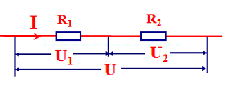

graph LR Start(电表的本质) --> A(电流表) Start --> V(电压表) A --> A1(理想电流表: 导线) A --> A2(非理想电流表: 能测电流的小电阻) V --> V1(理想电压表: 断路) V --> V2(非理想电压表: 能测电压的大电阻)
串联电路和并联电路
电磁学
电路
串并联电路的电流和电压
从定义出发分析电流关系
从电势的观点分析电压关系

从电势的观点分析分析复杂电路（复杂电路化简）


串并联电路的电阻
规律


- 串联电路的等效电阻：R=R_{1}+R_{2}
推导过程
U=U_{1}+U_{2}\Rightarrow \frac{U}{I}=\frac{U_{1}}{I}+\frac{U_{2}}{I}\Rightarrow R=R_{1}+R_{2}
- 并联电路的等效电阻：\frac{1}{R}=\frac{1}{R_{1}}+\frac{1}{R_{2}}
推导过程
I=I_{1}+I_{2}\Rightarrow \frac{U}{R}=\frac{U}{R_{1}}+\frac{U}{R_{2}}\Rightarrow \frac{1}{R}=\frac{1}{R_{1}}+\frac{1}{R_{2}}
串并联电路的等效电阻分析
n 个相同的 R，R_{串}=\underline{\qquad}，R_{并}=\underline{\qquad}。
再并/串一个电阻，R_串 和 R_并 怎么变？
某个电阻增大，R_串 和 R_并 怎么变？
大小两个电阻串/并联，R_串 /R_并 与 R_{大} 与 R_{小} 的关系？
R_{大}\gg R_{小}，R_串 /R_并 可以近似的看做哪一个？
| 串联电路 | 并联电路 | |
|---|---|---|
| I | I=I_{1}+I_{2} | I=I_{1}=I_{2} |
| U | U=U_{1}+U_{2} | U=U_{1}=U_{2} |
| R | R_{串}=R_{1}+R_{2} | \frac{1}{R_{并}}=\frac{1}{R_{1}}+\frac{1}{R_{2}} |
| n 个相同的 R | R_{串}=nR | R_{并}=\frac{R}{n} |
| 再并/串一个电阻 | R_{串}\uparrow | R_{并}\downarrow |
| 某个电阻增大 | R_{串}\uparrow | R_{并}\uparrow |
| 与 R_{大},\;R_{小} 比较 | R_{串}>R_{大} | R_{并}<R_{小} |
| R_{大}\gg R_{小} | R_{串}\rightarrow R_{大} | R_{并}\rightarrow R_{小} |
思考
如果大小两个电阻并联，你认为 R_并 的变化受哪个电阻影响更大?
电表的改装
认识表头

表头，又称灵敏电流计、微安表
两个重要参数：
- 表头内阻 r；
- 满偏电流 I_{g}

思考
- 表头可以直接当电压表用吗？
- 量程是多少？（已知内阻 r 和满偏电流 I_{g}）
- 表盘应该怎么改？
改装方法

将一个内电阻 r、满偏电流 I_{g} 的灵敏电流表 G 给改装成为一个量程为 0\sim U 的电压表，应该串联一个多大的电阻？改装后电压表的内阻是多大？
答案
- 串联电阻两端的电压：U-rI_{g}
- 通过串联电阻的电流：I_{g}
- 串联电阻的阻值：R=\frac{U-rI_{g}}{I_g}
- 改装后电流表的内阻：r_{改}=\frac{rR}{r+R}
速算
内阻为 r 的小电压表改装成为大电压表，量程扩大到 n 倍，需要串联一个多大的电阻？
将一个内阻 r 、满偏电流 I_{g} 的灵敏电流表 G 给改装成一个量程为 0\sim I 的电流表，应该并联一个多大的电阻？改装后电流表的内电阻是多大？
答案
- 并联电阻两端的电压：rI_{g}
- 通过并联电阻的电流：I-I_{g}
- 并联电阻的阻值：R=\frac{rI_{g}}{I-I_{g}}
- 改装后电流表的内阻：r_{改}=\frac{rR}{r+R}
速算
内阻为 r 的小电流表改装成为大电流表，量程扩大到 n 倍，需要并联一个多大的电阻？
总结
- 电流表和电压表就是一个电阻。（一般改装后的 R_{A}<1\;\Omega，R_{V}>1000\;\Omega）
- 这个电阻比较“聪明”，可以显示电压和电流。
练习
如图所示，A、B 两点接在恒压电源上，内阻不可忽略的电流表并联，示数分别为 2 I_{0} 和 3 I_{0}。若将两只电流表串联起来接入电路中，两只电流表的示数均为 4 I_{0}。求电路不接入电流表时，流过 R 的电流？
练习
如图所示, 四个相同的电流表分别改装成两个安培表和两个伏特表。安培表 A_{1} 的量程大于 A_{2} 的量程, 伏特表 V_{1} 的量程大于 V_{2} 的量程，把它们按图接入电路，比较以下量的大小：
- 安培表 A_{1} 的偏转角 \underline{\qquad} 安培表 A_{2} 的偏转角；
- 安培表 A_{1} 的读数 \underline{\qquad} 安培表 A_{2} 的读数；
- 伏特表 V_{1} 的读数 \underline{\qquad} 伏特表 V_{2} 的读数；
- 伏特表 V_{1} 的偏转角 \underline{\qquad} 伏特表 V_{2} 的偏转角。
练习
如图是有两个量程的电压表，当使用 A、B 两个端点时，量程为 0\sim10\;V；当使用 A、C 两个端点时，量程为 0 \sim 100\;V。已知表头的内阻 R_{g} 为 500\;\Omega ，满偏电流 I_{g} 为 1\;mA，求电阻 R_{1} 、R_{2} 的值。

练习
如图是有两个量程的电流表，量程为 0 \sim 1\;A， 0 \sim 0.1\;A。已知表头的内阻 R_{g} 为 200\;\Omega，满偏电流 I_{g} 为 2\;mA，问：
- AB、AC 哪两端的电流量程大？
- 电阻 R_{1} 、R_{2} 的值。（列出方程即可）

答案
接 A、B 时，量程记为 I_{1}=1\;A；接 A、C 时，量程记为 I_{2}=0.1\;A
\begin{cases} I_{1}=I_{g}+\frac{R_{g}+R_{2}}{R_{1}}I_{g} \\ I_{2}=I_{g}+\frac{R_{g}}{R_{1}+R_{2}}I_{g} \\ \end{cases} \Rightarrow \begin{cases} R_{1}=\frac{20}{49}\;\Omega \\ R_{2}=\frac{180}{49}\;\Omega \\ \end{cases}
练习：电表的校准
一电流表由电流计 G 和电阻 R 并联而成，如图所示，在校准时发现此电流表的读数总比准确值稍小些，采用下列措施可使读数变准确的是
A．在 R 上串联一比 R 小得多的电阻
B．在 R 上串联一比 R 大得多的电阻
C．在 R 上并联一比 R 小得多的电阻
D．在 R 上并联一比 R 大得多的电阻
电流表内外接
电表的本质
内外接
两表的读数为 U 和 I，两表的内阻记为 R_{V} 和 R_{A}
- 电流表内接时，表示出待测电阻的端电压、电流、电阻真实值 R_{真}？
答案
R_{真}=\frac{U-U_{A}}{I}=\frac{U-IR_{A}}{I}
- R_{真} 与 R_{测} 进行比较并分析误差来源？
答案
R_{测}>R_{真} 。因为电流表分压了，实际测得的是电阻和电流表的串联电阻 R_{测}=R_{真}+A_{A}

- 电流表外接时，表示出待测电阻的端电压、电流、电阻真实值 R_{真}？
答案
R_{真}=\frac{U}{I-I_{V}}=\frac{U}{I-\frac{U}{R_{V}}}
- R_{真} 与 R_{测} 进行比较并分析误差来源？
答案
R_{测}<R_{真} 。因为电压表分流了，实际测得的是电阻和电压表的并联电阻 R_{测}=\frac{R_{真}\cdot R_{V}}{R_{真} + R_{V}}
两种接法分别适用于什么情况？（待测电阻大还是小）
答案
- 内接法适用于测量大电阻。 内接法的误差是电流表分压引起的，待测电阻大，分压影响小；
- 外接法适用于测量小电阻。 外接法的误差是电压表分流引起的，待测电阻小，分流影响小。
| 接法 | 电流表内接 | 电流表外接 |
|---|---|---|
| 实际测量值 | 待测电阻和电流表的串联电阻 | 待测电阻和电压表的并联电阻 |
| 误差来源 | 电流表分压 | 电压表分流 |
| 适用待测电阻 | 大电阻，即 R_{x}\gg R_{A} | 小电阻，即 R_{x}\ll R_{V} |
口诀
大内偏大，小外偏小：测量大电阻用电流表的内接法，测量值偏大；测量小电阻用电流表的外接法，测量值偏小
如何选取接法
graph LR Start(判断接法) --> known(电表内阻的\n精确值已知) --> a(流内压外) Start --> unknown(电表内阻的\n精确值未知) unknown --> judgement1(内接\外接的\n电表读数已知) --> b(试触法) unknown --> judgement2(待测电阻和电表内阻\n估计值已知) --> c(比例计算法)
流内压外
如果已经知道了电流表内阻的准确值，那就用内接法；如果已经知道了电压表内阻的准确值，那就用外接法。
试触法
当待测电阻 R_{待}、电流表内阻 R_{A} 和电压表内阻 R_{V} 的大小关系不能确定时，如图所示，我们可以运用试触法来大致判断。
将电压表的可动接线端分别试接 b、c 两点，观察两电表的示数变化。如果电流表的示数变化明显，说明电压表的分流作用对电路影响大，电压表的内阻相对而言比较小，那么待测电阻电阻值就相对较大，应选用内接法；如果电压表的示数有明显变化，说明电流表的分压作用对电路影响大，电流表的内阻相对而言比较大，那么待测电阻电阻值就相对较小，所以应选外接法。
练习
如图，有一未知电阻 R_x，为了较准确地测出电阻值，利用试触法得到两组数据，接 a 时得到数据为 6\;V、0.15\;A，接 b 时得到数据为 5.8\;V、0.2\;A，那么该电阻测得较为准确的数值及它与真实值比较的情况是
A. 29\;\Omega，大于真实值
B. 40\;\Omega，大于真实值
C. 29\;\Omega，小于真实值
D. 40\;\Omega，小于真实值
答案
通过内外接时的电表示数，粗略比较电压表分流导致电流的相对误差和电流表分压导致电压的相对误差
\frac{\Delta U}{U}=\frac{6-5.8}{6}=\frac{1}{30}<\frac{\Delta I}{I}=\frac{0.2-0.15}{0.15}=\frac{1}{3}
分压的影响更小，应该采用电流表内接法，选 B
比例计算法
- 外接时，电压表分流导致电流的相对误差 \frac{\Delta I}{I}=\frac{\frac{U}{R_{V}}}{I}
- 内接时，电流表分压导致电压的相对误差 \frac{\Delta U}{U}=\frac{IR_{A}}{U}
- 比较大小：
- \frac{\Delta I}{I}>\frac{\Delta U}{U}\Rightarrow \frac{\frac{U}{R_{V}}}{I}>\frac{IR_{A}}{U}\Rightarrow \left( \frac{U}{I} \right)^{2}>R_{A}R_{V}，即当 R>\sqrt{ R_{A}R_{V} } 时应选择内接法，电压表分流的影响大于电流表分压的影响
- 反之，当 R<\sqrt{ R_{A}R_{V} } 时应选择外接法
完善口诀
基于此结论，对口诀“大内偏大，小外偏小”进行补充，判断待测电阻大小的临界值是 \sqrt{ R_{A}R_{V} }
分压式接法和限流式接法
分压式接法
- 当滑片在中央时，且 A、B 之间无负载时，U_{AB}=？
- 当滑片在中央时， A、B 之间接入负载时，比较 U_{AB} 与 \frac{U}{2} 的大小?
- 为了让 U_{AB}=\frac{U}{2}，滑片应该向哪里移动？
- 通过上分析，你认为 U_{AB} 与接入长度 x（电阻）的阻值成线性变化吗？

- 当 R_0 和 R 满足什么条件时， U_{AB} 与 x 成线性变化？
- 若 R \gg R_0 呢？ U_{AB} 随接入长度 x 的变化的形状会怎么样？
两种接法比较
问题：分压式/限流式接法怎么选
- 要求电压表从零开始读数，选哪种接法？
- 用 R_{0} 表示滑变电阻的最大阻值，E 表示电源电动势，求 R_{x} 端电压的取值范围；
- 待测电阻 R_{x}\gg R_{0}，选那种接法？
- 测量同一个 R_{x}，那种接法干路电流大？
- 有烧表风险时，选哪种接法？有节能需求时选哪种接法？

总结
| 限流式 | 分压式 | |
|---|---|---|
| 原理 | 通过滑变电阻限制整个电路的电流，调节 R 的电流 | 通过调节并联电路的分压比例，调节 R 的电压 |
| 滑片初始位置 | 为保护电路，初始时滑片处于电阻最大端 | 为保护电路，初始时滑片处于干路电阻最大端 |
| 滑变电阻最大阻值 R_{0} | R_{x} 的 2\sim10 倍 | R_{0}<2R_{x} |
| R_{x} 端电压范围 | \left[ \frac{R_{x}}{R_{x}+R_{滑max}}E \right],E | [0，E] |
| 优势 | 省电；省线；好接 | 从零开始调节，范围大；防烧表 |
分压/限流选择
- 要求大范围必分压（从 0 开始/尽可能准确/要测多组数据/调节范围大）
- 根据电阻分析（R_{滑 max}<2R_{x} 分压；R_{x} 的 2\sim10 倍限流）
- 防烧表必分压
- 要节能必限流